"Love the boba here and all of their desserts, especially the macarons & crème brûlée. The decor inside is really cute with a Paris theme. Happy to support a wonderful small business!"
AArchana B.Austin, TX · Yelp
French macarons with delicate shells and silky centers. Custom cakes decorated by hand. A boba bar pouring taro, butterfly and Thai milk teas. Everything made in-house by Chef Annie — since 2019.
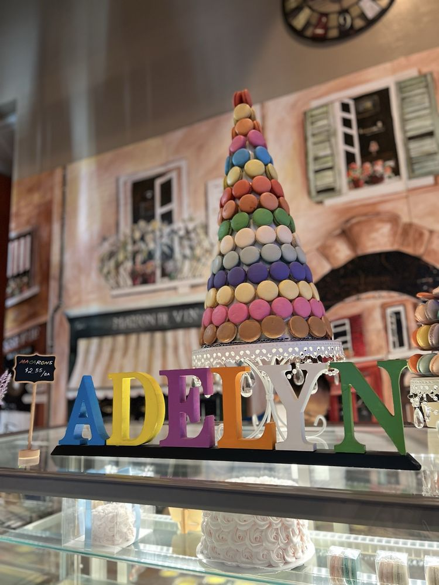
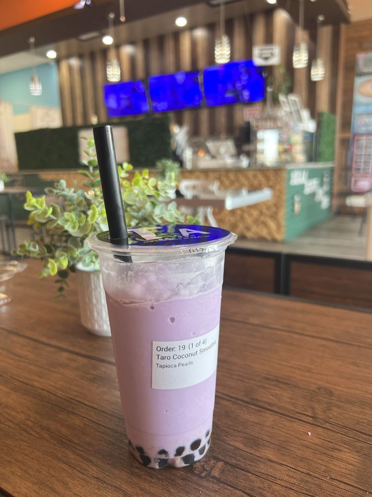
Crisp shells, chewy centers, silky ganache — in a rotating rainbow of flavors. Reviewers say they'll never buy one anywhere else.
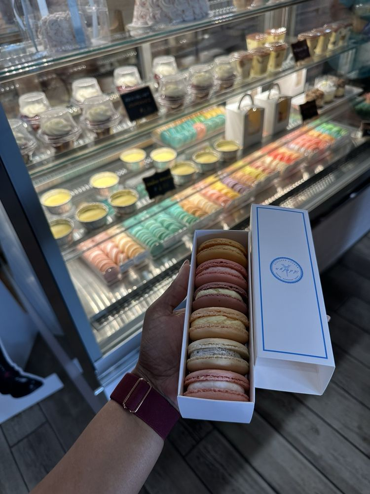
No. 02Birthdays, baby showers, weddings — designed with you, baked from scratch, decorated entirely by hand.
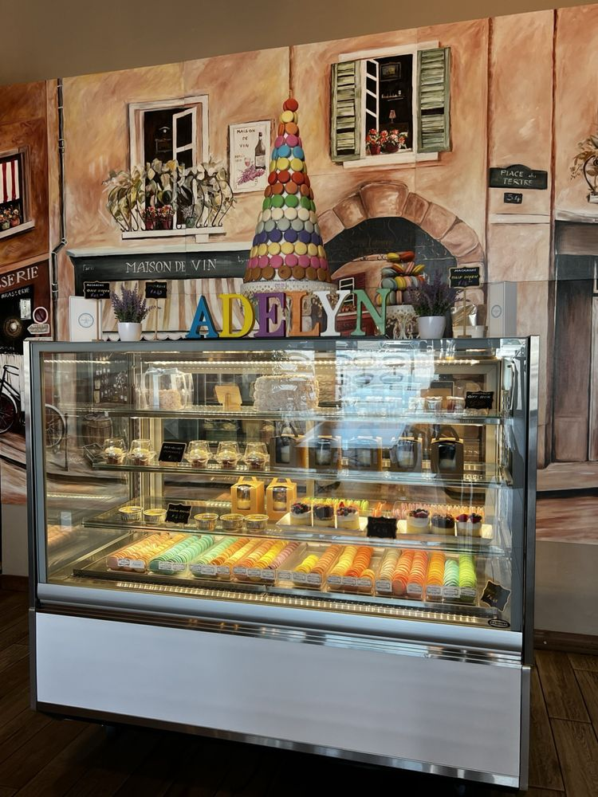
No. 03Buttery cupcakes with scratch-made frosting, and hand-dipped cake pops made for parties.
A proper French custard with a crackling caramel top — a quiet favorite among the regulars.
Dreamy Sky, Butterfly, Thai, taro coconut — brewed teas with chewy pearls, poured into our little blue-badge cups.
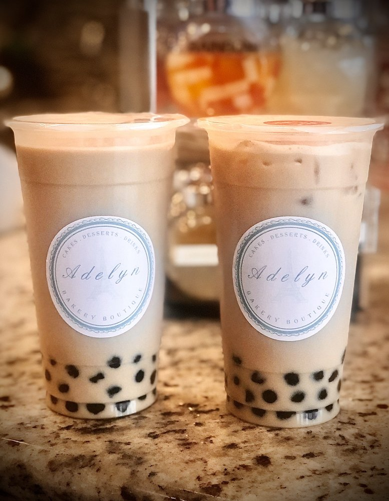
No. 06Strawberry, mango, honeydew — cold, bright fruit blends made for Texas afternoons.
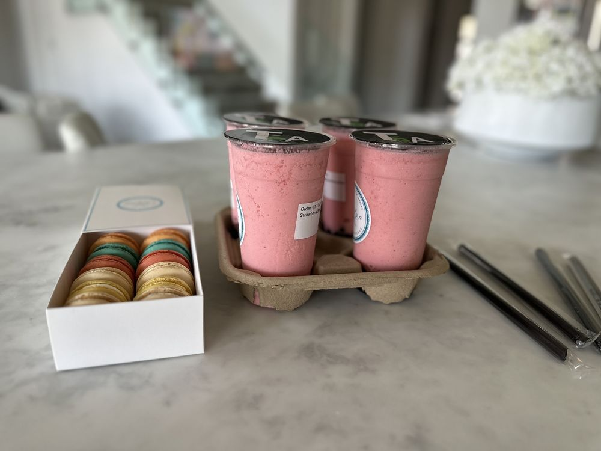
Step past the pastry case and you're on a painted Parisian street — flower carts, café awnings, the Eiffel Tower in the distance. Chef Annie opened Adelyn in 2019 after more than a decade in pastry, and everything in the case is still made from scratch, in-house, every day.
— Chef Annie & the Adelyn team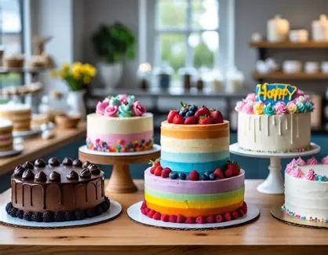
From first-birthday smash cakes to wedding tiers, every custom cake is designed around your flavors, your colors and your story — then baked and decorated by hand in our kitchen.
"Love the boba here and all of their desserts, especially the macarons & crème brûlée. The decor inside is really cute with a Paris theme. Happy to support a wonderful small business!"
"Super cute spot with a great variety of milk teas, juices, and smoothies. The macarons and cupcakes looked divine, and their custom cakes on display were gorgeous. What a lovely local spot."
"Some of the best tasting boba teas I've had in a while. My son had the Cookies and Cream, which is now his favorite dessert drink in the world. The quality was worth it."
Rated 4.5 of 5 across 94 reviews on Yelp
201 University Oaks Blvd, Ste 560
Round Rock, TX 78665
In the University Oaks shopping center, next to Two Hands — free parking at the door.
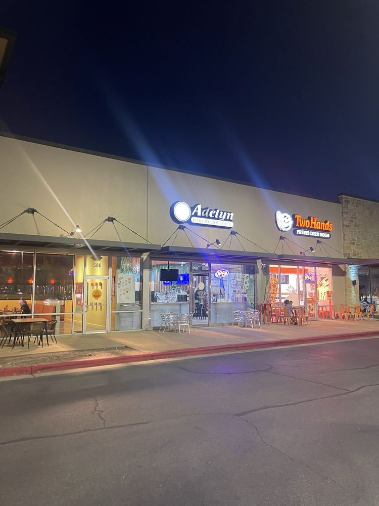
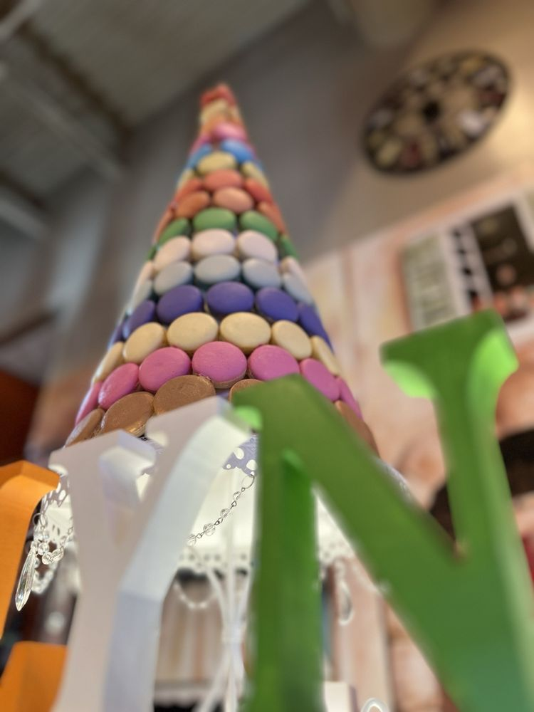
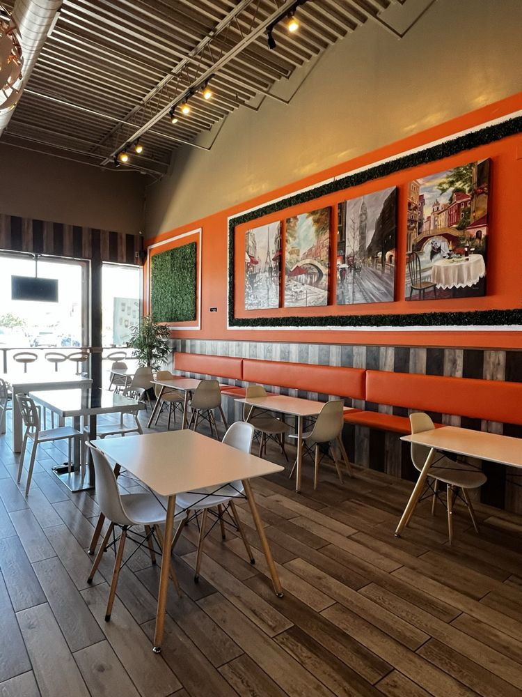
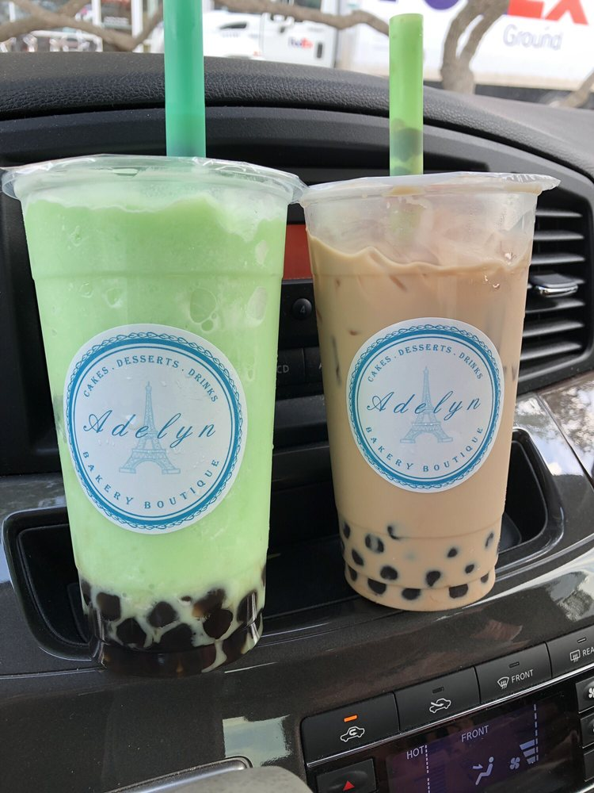
Tap any photo to view it larger
Swing by for a macaron and a milk tea, or have the case delivered to your door. Either way — it was all made here this morning.